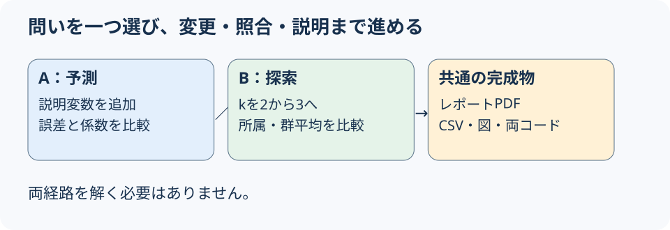
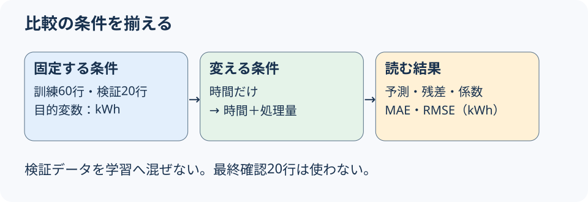
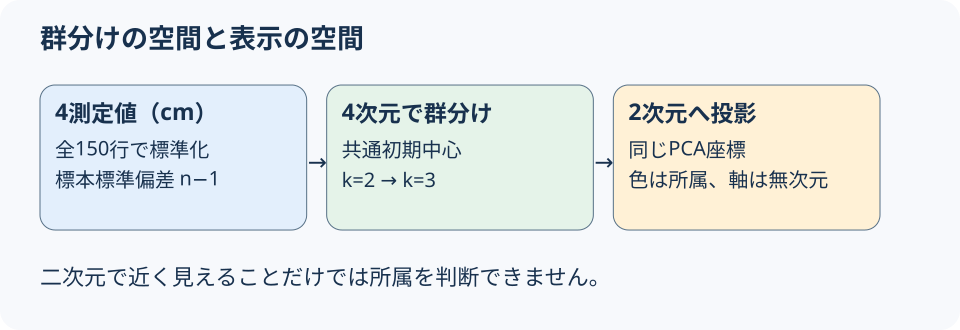
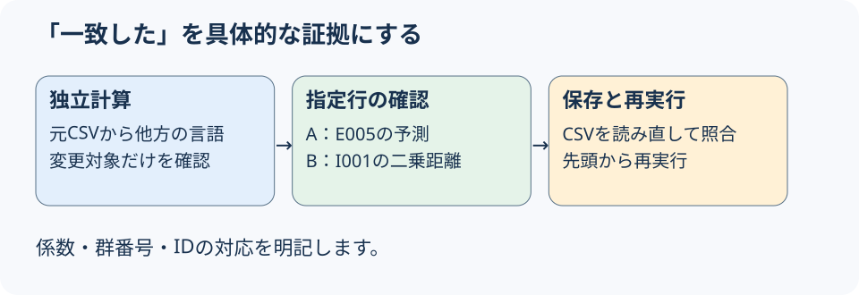
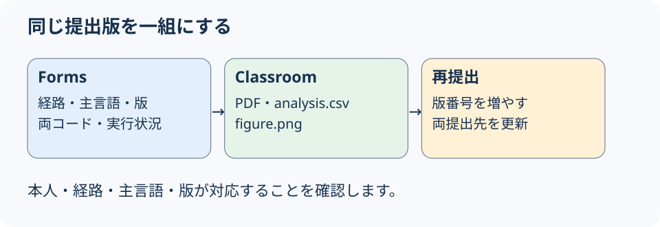

後半総合演習
| 活動 | 分 |
|---|---|
| 経路選択・準備／主例説明 | 10／15 |
| 変更・分析／独立照合 | 25／10 |
| レポート／提出確認・質問 | 20／10 |
仕上げは授業後も可。締切は教員の正式案内を確認。


予測＝切片＋時間係数×4.8＋処理量係数×116

各中心までの二乗距離
(z₁−c₁)²＋(z₂−c₂)²＋(z₃−c₃)²＋(z₄−c₄)²
3中心への距離を比べ、最小の群と所属を確認。


何を変え、何が変わり、どこまでいえるか。